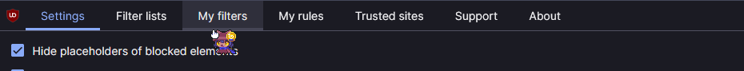

If you are tired of bilging the flood over and over again, You can block it with uBlock Origin. If you do not have that installed, then you may not be able to block the flood.
Step 1. Click on uBlock Origin, then click on "Open the dashboard"

Step 2. Direct your attention to the top of the dashboard, from there, click on "My Filters"
Step 3. It'll take you to this page. From here, you wanna paste in these two lines of text:
||melonking.net/scripts/flood.js$script
||melonking.net/styles/flood.css$script
After that, click on Apply changes.
and now, you have no flood. Enjoy.
Q. Will this work with custom themed floods?
A. Most likely not.
Q. Can I modify my host file to block these floods?
A. I highly recommend you don't do that since modifying your host file can screw things up.
Q. Will this completely remove all floods, like deletes it off of the server?
A. No! It just simply blocks them.
Q. But... Does this mean you hate the flood script thingy? :(
A. No!!! Sometimes it gets old. This isn't suppose to be a protest against the leaky ring, rather, suppose to give everyone a choice!
If you have any questions, please let me know.
Too lazy to clean up the bilge, goofy goober